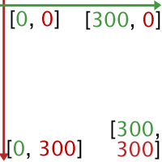
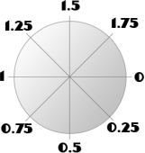
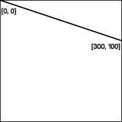
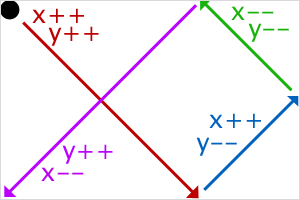

La balise <canvas>, introduite avec l'HTML5 est déjà utilisable sur plusieurs navigateurs tels que Mozilla Firefox, Safari, Google Chrome ou Opera. Elle permet, via moult fonctions de dessin Javascript de générer dans ce dernier, des formes, images ou textes. J'aurais donc pour but dans ce tutoriel de vous apprendre à maîtriser les bases du dessin et de l'animation avec <canvas>.
Avant de commencer à animer des formes, il nous faut tout d'abord déclarer notre canvas et le lier à notre Javascript. Le code suivant est la structure minimale afin que tout projet <canvas> fonctionne correctement.
<!DOCTYPE html>
<html>
<head>
<title>Mon projet canvas</title>
<script src="canvas.js"></script>
</head>
<body>
<canvas id="mon_canvas" width="500" height="500">
Message pour les navigateurs ne supportant pas encore canvas.
</canvas>
</body>
</html>
Rien de bien compliqué ici, hormis la déclaration du canvas qui peut vous sembler un peu nouvelle.
id="mon_canvas" : Sert à identifier le <canvas>.
width="500" height="500" : Ce n'est pas indispensable, mais sans çà, le canvas prend la forme d'un rectangle de 100x200 pixels. Notez qu'il est tout de même possible de régler la taille plus tard via Javascript.
window.onload = function()
{
var canvas = document.getElementById('mon_canvas');
if(!canvas)
{
alert("Impossible de récupérer le canvas");
return;
}
var context = canvas.getContext('2d');
if(!context)
{
alert("Impossible de récupérer le context du canvas");
return;
}
//C'est ici que l'on placera tout le code servant à nos dessins.
}
Un peu plus compliqué ici, mais ça reste tout de même relativement simple ;)
window.onload = function(){ ... } : Cela permet d'empêcher l'exécution du code avant le chargement complet de tous les éléments de la page.
var canvas = document.getElementById('mon_canvas'); : On récupère l'objet canvas dans la variable canvas, on vérifie ensuite que tout c'est bien passé.
var context = canvas.getContext('2d'); : On récupère le context du canvas. Ce sont les méthodes de cet objet que l'on utilisera pour dessiner sur le canvas.
Comme je l'ai dit plus haut, toutes les méthodes de dessin s'utiliseront sur l'objet context. Nous allons tout d'abord voir les formes les plus simples, et nous terminerons avec les plus complexes.
Les types de formes
Avant de tracer la moindre forme, il faut savoir qu'il en existe deux types :
Les formes de type «fill», ce sont des formes pleines.
Les formes de type «stroke», ce sont les contours de la forme qui seront tracés.
Ainsi, pour identifier quel type de forme on tracera avec telle ou telle méthodes, il nous suffira de lire son préfixe, à savoir : «fill» et «stroke».
Rappels sur les coordonnées

Pour pouvoir tracer quoi que ce soit, il vous faudra comprendre comment sont positionnés les éléments sur le canvas. Chacun des éléments composant notre dessin est positionné sur un repère imaginaire dont l'origine est le coin supérieur gauche du canvas. Ainsi, si l'on avait un canvas de 300 pixels sur 300 pixels,
Le point [0, 0] se situerait en haut à gauche
Le point [300, 300] se situerait lui tout en bas à droite.
Le point [0, 300] se situerait tout en bas à gauche.
Etc...
Je ne pense pas que ce soit cela qui vous cause le plus de problèmes, à moins bien sûr que vous ayez raté quelques cours de 6eme ;)
Les formes
Le rectangle
La méthode à utiliser, ici, est fillRect(x, y, largeur, hauteur);. Il va de soi que strokeRect(); fonctionne aussi.
Paramètre :
Description :
x
Coordonnées du coin supérieur gauche sur l'abscisse
y
Coordonnées du coin supérieur gauche sur l'ordonnée
Largeur
Largeur du rectangle, en pixels.
Hauteur
Hauteur du rectangle, en pixels.
Les lignes
J'avoue que leurs noms n'ont vraiment rien d'alléchant, pourtant, elles sont assez utiles. Vous aurez quatre méthodes à connaître pour pouvoir exploiter leur potentiel.
//On n'oublie pas de récupérer le canvas et son context.
context.beginPath();//On démarre un nouveau tracé
context.moveTo(0, 300);//On se déplace au coin inférieur gauche
context.lineTo(150, 0);
context.lineTo(300, 300);
context.lineTo(0, 300);
context.stroke();//On trace seulement les lignes.
context.closePath();
Méthode :
Utilité :
context.beginPath();
On indique au context que l'on s'apprête à effectuer un nouveau tracé. Quant à context.closePath();, il indique au context que l'on a terminé avec ce tracé.
context.moveTo(x, y);
Par défaut, si l'on trace une ligne, elle commencera aux coord. [0, 0]. Cette fonction déplace le point de départ de chaque ligne.
context.lineTo(x, y);
Cette fonction trace une ligne en partant de la position actuelle, jusqu'aux coordonnées x, y indiquées.
context.fill();
Créer une forme pleine à partir des lignes tracées.
context.stroke();
Créer juste les traits des lignes.
Attribut :
Utilité :
Type de valeur accepté :
context.lineWidth = valeur;
Change l'épaisseur des lignes
Nombre Entiers
context.lineJoin = valeur;
Change le type de jointure entre les lignes
Chaîne de caractères suivantes : «round» (arrondi), ou «bevel» (en biseau)
Le cercle
En réalité, il n'existe pas de méthode pour créer un cercle seulement. Il faut en fait passer par la fonction permettant le tracé d'un arc de cercle.
Voilà comment on utilise la fonction «arc» (c'est son p'tit nom :) ) :
//On n'oublie pas de récupérer l'objet canvas et son context.
context.beginPath(); //On démarre un nouveau tracé.
context.arc(100, 100, 50, 0, Math.PI*2); //On trace la courbe délimitant notre forme
context.fill(); //On utilise la méthode fill(); si l'on veut une forme pleine
context.closePath();
Étant donné qu'elle requiert beaucoup de paramètres qui, pour la plupart vous sembleront obscurs, j'ai jugé utile de vous les présenter sous forme de tableau :
Paramètre :
Description :
x
Coordonnées du centre du cercle, sur l'abscisse
y
Coordonnées du centre du cercle, sur l'ordonnée.
Rayon
C'est tout simplement le rayon du cercle (exprimé en pixels)
Angle de départ
C'est l'angle à partir duquel on va commencer notre tracé, il est exprimé en Radians (voir le schéma ci-dessous).
Angle de fin
C'est l'angle jusqu’au quel on va effectuer notre tracé. Il est lui aussi exprimé en Radians.
«Anti-clockwise»
C'est un booléen qui, quand il vaut true inverse le sens du tracé. Ainsi, l'angle de départ sera l'angle de fin, et l'angle de fin sera, quant à lui, l'angle de départ.
Tout comme me l'a très justement signalé Amatewasu, mes explications quant aux angles n'étaient visiblement pas des plus claires, et c'est pourquoi j'ai rajouté ce petit paragraphe explicatif afin que tout le monde s'y retrouve.

Pour définir un angle, il vous suffit de multiplier à Math.PI une valeur comprise entre 0 et 2 afin de définir la position de votre angle. Notez que si le 2 n’apparaît pas sur le schéma, c'est parce qu'il est exactement à la même position que le 0, mais après une révolution complète.
Les images
Cette fonction est vraiment très puissante, elle permet via ses neuf paramètres d'afficher une image sur le <canvas> à certaines coordonnées, en la rognant ou en la déformant si nécessaire.
Sa forme la plus basique ne comporte que trois paramètres : l'objet "Image" et les coordonnées x et y :
//On n'oublie pas de récupérer l'objet canvas et son context.
var mon_image = new Image();
mon_image.src = "mon_image.png";
context.drawImage(mon_image, 0, 0);
Sa forme la plus complexe prend, elle, neuf paramètres :
Paramètre :
Description :
image
On lui passe un objet "Image".
xSource
Position x dans le fichier, et à partir de laquelle on récupère l'image.
ySource
Position y dans le fichier, et à partir de laquelle on récupère l'image
SourceWidth
Largeur de l'image que l'on récupère dans le fichier
SourceHeight
Hauteur de l'image que l'on récupère dans le fichier
posX
Position x sur le canvas à partir de laquelle on va dessiner l'image.
posY
Position y sur le canvas à partir de laquelle on va dessiner l'image.
Width
Largeur de l'image dessinée sur le canvas.
Height
Hauteur de l'image dessinée sur le canvas.
//On n'oublie pas de récupérer l'objet canvas et son context.
var mon_image = new Image();
mon_image.src = "mon_image.png";
context.drawImage(mon_image, 0, 0, 10, 10, 35, 60, 15, 15);
Ici, on récupère dans "mon_image", la portion de 10x10 pixels aux coordonnées [0, 0], et on la place sur le canvas aux coordonnées [35, 60] pour enfin l'agrandir à 15x15 pixels.
Si vous souhaitez en savoir plus sur la fonction drawImage, sachez que sebcap26 à publié un tutoriel sur la création d'un mini-rpg utilisant canvas et la fonction drawImage de manière poussée.
Le texte
Par chance, il existe une fonction permettant de dessiner du texte. Elle est vraiment très simple, elle ne prend que trois paramètres et l'on peut même choisir la police. N'est-ce pas merveilleux ? :lol:
//On n'oublie pas de récupérer l'objet canvas et son context.
context.font = "18px Helvetica";//On passe à l'attribut "font" de l'objet context une simple chaîne de caractères composé de la taille de la police, puis de son nom.
context.fillText("Hello World", 0, 30);//strokeText(); fonctionne aussi, vous vous en doutez.
Les couleurs
J'aurais peut-être dû vous en parler avant, mais j'ai pensé qu'étant une notion simple et plus «divertissante» que toutes ces fonctions compliquées, il serait plus agréable de la voir à la fin. Donc oui, vous n'êtes pas obligés de créer vos formes en noir & blanc, il existe un attribut de l'objet context que l'on peut modifier afin de changer les couleurs. Le voici :
context.fillStyle = "#ff0000"; //Toutes les prochaines formes pleines seront rouges.
context.strokeStyle = "rgba(0, 0, 255, 0.5)"; //Toutes les prochaines formes "stroke" seront bleues et semi-transparentes.
Les dégradés
Vous en voulez encore n'est-ce pas ? Vous voulez pouvoir faire des graphiques qui en jettent ? Et bien en plus de superbes couleurs, vous pouvez créer de superbes dégradés, ils fonctionnent exactement comme les couleurs, on les passe par l'attribut context.fillStyle.
//On n'oublie pas de récupérer le canvas et son context.
var degrade = context.createLinearGradient(0,0,300,100);//Délimitation du début et de la fin du dégradé.
degrade.addColorStop(0,"#FFFFFF");//Ajout d'une première couleur.
degrade.addColorStop(1,"#000000");//Ajout de la seconde couleur.
context.fillStyle = degrade;//On passe notre dégradé au fillStyle();
context.fillRect(0,0,300,300);//On trace un rectangle plein qui aura pour style le dégradé.
Dans cet exemple, nous traçons sur un canvas de 300x300 pixels :

Ligne 3 : var degrade = context.createLinearGradient(0,0,300,100); nous définissons les limites du dégradé.
Ligne 4 à 8 : Ensuite, nous y ajoutons deux couleurs. Et nous l'appliquons au fillStyle, et enfin créons le rectangle porteur du dégradé.
Dans tous les jeux vidéo dans lesquels vous pouvez distinguer un mouvement, ce que vous voyez est en réalité une suite d'image dessinée très rapidement et qui vous donne une impression de fluidité. Les plus malins d’entre vous ont peut-être déjà une petite idée de ce que je veux dire. Non ? Tant pis, je vais vous expliquer. ;)
Nous allons devoir mettre en place ce que l'on appelle une boucle de rafraîchissement qui appellera une fonction de dessin qui s'occupera, en fonction des valeurs qu'on lui renvoie, de tracer l'image dans le canvas.
Code minimal
window.onload = function()
{
var canvas = document.getElementById('mon_canvas');
if(!canvas)
{
alert("Impossible de récupérer le canvas");
return;
}
var context = canvas.getContext('2d');
if(!context)
{
alert("Impossible de récupérer le context du canvas");
return;
}
var myInterval = setInterval(animate, 1000/30);
function animate()
{
//C'est ici que toutes les manipulations sur le canvas se feront.
}
}
Mais que se passe-t-il à la ligne 17 ?
Ce simple myInterval = setInterval(animate, 1000/30); appelle la fonction animate() trente fois par seconde. C'est la fréquence approximative à partir de laquelle l'œil humain discerne un mouvement parfaitement fluide.
Nous allons donc devoir placer nos fonctions de dessin à l'intérieur de cette fonction animate(). Nous allons faire un exemple simple, celui d'un rectangle s'agrandissant jusqu'à faire la taille de notre canvas puis rétrécissant, et ainsi de suite.
window.onload = function()
{
//On n'oublie pas de récupérer le canvas et son context.
canvas.width = 300;
canvas.height = 300;
var myInterval = setInterval(animate, 1000/30); //Notre boucle de rafraîchissement.
//On défini quelques variables
var tailleMini = 10;
var tailleMax = canvas.width;//Tant que notre canvas reste carré, l'agrandissement peut-être égal à un des côtés.
var tailleActuelle = tailleMini+1;//On initialise la taille actuelle au minimum de ce à quoi elle peut correspondre, puis on y additionne 1 afin de ne pas boucler indéfiniment sur les phases d'agrandissement, rétrécissement.
var xPos = 0;
var yPos = 0;
var vitesse = 1;//La valeur 1 signifie que l'on augmentera la taille du carré, tandis que -1 correspondra à une réduction.
function animate()
{
context.clearRect(0, 0, canvas.width, canvas.height);//Cette fonction permet de réinitialiser notre canvas. Plus rien n'y est affiché.
//On commence par calculer la position à laquelle on doit placer le carré, pour qu'il reste bien au centre du canvas.
xPos = (canvas.width/2)-(tailleActuelle/2);
yPos = xPos;//Notre canvas étant un carré, pas besoin de recalculer le milieu de l'ordonnée : c'est le même que l'abscisse.
//On a tout ce qu'il nous faut pour tracer notre carré :
context.fillRect(xPos, yPos, tailleActuelle, tailleActuelle);
//On fait les tests pour savoir si l'on va devoir agrandir ou rétrécir notre carré.
if(tailleActuelle >= tailleMax || tailleActuelle <= tailleMini)
{
vitesse *= -1;
}
//On applique la vitesse calculée à la taille actuelle pour la modifier.
tailleActuelle += vitesse;
}
}
Le procédé employé ici est très simple : A chaque rafraîchissement, on vérifie si on a atteint la taille maximal/minimal, si c'est le cas, on inverse la vitesse, ce qui a pour effet d'inverser le mouvement. Puis, on additionne la vitesse avec la taille actuelle, si elle est négative, dans ce cas le carré rétréci, si elle est positive, il s'agrandit.
C'est la dernière partie de ce tutoriel, et je pense que terminer avec un T.P sera bien plus enrichissant pour vous qu'un autre chapitre de théorie. Ce que nous allons devoir faire ici, c'est créer une balle qui rebondira sur les rebords du canvas, un peu à la manière des économiseurs d'écran Windows. Voilà un schéma, au cas où vous ne comprendriez pas de quoi je parle, vous expliquant le résultat attendu.
Schéma sur le TP à réaliser
Que devrez-vous mettre en place ?
Un canvas non carré (pour que la balle ne suive pas toujours la même trajectoire).
Une belle balle créée grâce à la fonction arc.
La boucle de rafraîchissement permettant le mouvement de la balle.
Un système de condition gérant les rebonds en cas de collisions avec un des rebords. (2 conditions suffisent, si vous êtes malins, et je n'en doute pas ;) ).
A quoi devrez-vous faire attention ?
Vous devrez faire attention à ce que la balle ne dépasse jamais les bords du canvas. A vous de faire les calculs nécessaires pour que les bonnes coordonnées soient prises en compte en fonction du bord touché par la balle.
Ne pas oublier de réinitialiser le canvas via clearRect().
Encore une petite chose : L'important n'est pas que vous réussissiez l'exercice, même si cela prouverait que vous avez bien tout suivi. L'important est que vous cherchiez par vous même les solutions à chacune des problématiques. Il ne vous serai donc d'aucun intérêt d'aller voir la correction de suite.
Bon courage ! ;)
Correction
Pour ceux qui n'auraient pas réussi, ou pour ceux qui cherchent à améliorer leur code, voici la correction : Par souci de gain de place, j'ai condensé tout le code en un seul fichier, mais le fonctionnement est le même.
<!DOCTYPE HTML>
<html>
<body>
<canvas id="myCanvas" width="400" height="300" style="border:1px solid black;">
Votre navigateur ne supporte pas canvas.
</canvas>
<script type="text/javascript">
window.onload = function()
{
var canvas = document.getElementById("myCanvas");
if(!canvas)
{
alert("Impossible de récupérer le canvas");
return;
}
var context = canvas.getContext("2d");
if(!context)
{
alert("Impossible de récupérer le context");
return;
}
var diametreBalle = 20;
var posX = 1+diametreBalle/2;
var posY = 1+diametreBalle/2;
var vitesseX = 3;
var vitesseY = 3;
var myInterval = setInterval(animate, 1000/30);
function animate()
{
context.clearRect(0, 0, canvas.width, canvas.height);
//Tracé de la balle
context.beginPath();
context.arc(posX, posY, diametreBalle/2, 0, Math.PI*2);
context.fill();
//On va vérifier si la balle à toucher l'un des bords du canvas.
if(posX+diametreBalle/2 >= canvas.width || posX <= 0+diametreBalle/2)//Si on touche le bord gauche ou droit
{
vitesseX *= -1;//On inverse la vitesse de déplacement sur l'axe horizontal.
}
if(posY+diametreBalle/2 >= canvas.height || posY <= 0+diametreBalle/2)//Si on touche le bord du bas ou du haut
{
vitesseY *= -1;//On inverse la vitesse de déplacement sur l'axe vertical.
}
//On additionne les vitesses de déplacement avec les positions
posX += vitesseX;
posY += vitesseY;
}
}
</script>
</body>
</html>
var posX = 1+diametreBalle/2; et var posY = 1+diametreBalle/2; : On initialise les variables de position à leurs valeurs minimales, à savoir le coin supérieur droit. Etant donné que les coordonnées de la balle sont définies par son centre, on additionne son rayon pour que quand la balle soit en [0, 0], elle soit encore dans l'écran. De plus, j'ajoute 1 pour qu'elle ne reste pas coincée sur les rebords.
if(posX+diametreBalle/2 >= canvas.width || posX <= 0+diametreBalle/2){ ... } : En fait ici, on dit que lorsque le côté droit de la balle touchera le coin (ou dépassera), ou lorsque le côté gauche touchera le côté gauche, on inversera la vitesse horizontale.
vitesseX *= -1; : C'est la manière la plus simple d'inverser un nombre, qu'il soit négatif ou positif, cela marchera à tous les coups. (2x-1 = -2 et -2x-1 = 2)
posX += vitesseX; : Ici, on additionne la vitesse de déplacement horizontale avec la position horizontale. Ainsi, si elle est positive, on avancera, tandis que si elle est négative, on reculera.
Avouez que ce n'était pas si compliqué ? ;)
Avec tout ce que l'on a vu, je pense que vous devez être largement capable de créer, seul, de très belles choses. Bon courage. ;)